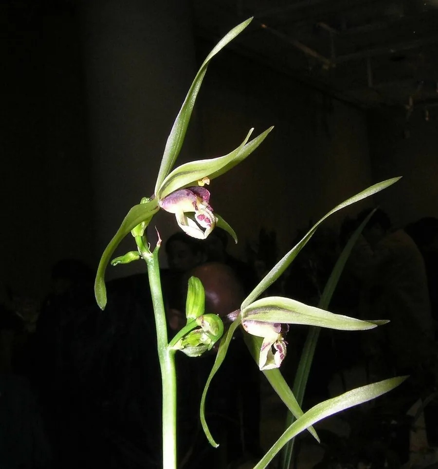

花卉与草本 · 植物界
寒兰 Cymbidium kanran

兰科兰属地生兰，叶狭长挺拔、花葶高挑，深秋至冬季开花，香气清冽持久，是中国传统兰花中的名品。
- 分类
- 门被子植物门纲单子叶植物纲目天门冬目科兰科属兰属
- 栖息环境
- 海拔 800–2000 米的山地林下与溪谷旁，喜凉爽湿润半阴
- 地理分布
- 中国浙江、福建、江西、湖南、广东、广西、云南、贵州、台湾；日本
- 保护级别
- 暂无 IUCN 评估；野生资源因采挖减少，多地加强保护
物种志
寒兰为兰科兰属地生草本，假鳞茎狭卵形，叶四至六枚，狭带形，长三十至七十厘米，薄革质，先端渐尖，叶姿挺拔。花葶从假鳞茎基部抽出，直立，高三十至六十厘米，着花五至十二朵，花被片狭长，颜色有黄绿、紫红、白等，唇瓣具紫红色斑纹，花期十月至翌年一月，香气清冽持久；蒴果长圆形，果期翌年春季。
寒兰分布于中国浙江、福建、江西、湖南、广东、广西、云南、贵州、台湾等地，日本也有，多生于海拔八百至两千米的山地林下和溪谷旁。它喜凉爽湿润和半阴环境，要求疏松透气、排水良好的腐殖质土壤，忌高温闷热和积水。花姿清雅、香气幽远，是中国传统兰花的重要种类，常作盆栽观赏；野生资源因过度采挖而减少，需加强保护。
形态与习性
- 株高叶长 30–70 cm，花葶高挑
- 花期10 月至翌年 1 月，香气清冽
- 果期翌年春季，蒴果长圆形
- 光照喜半阴散射光，忌暴晒
- 水分喜湿润，忌积水烂根
- 土壤疏松透气的腐殖土
- 主要用途传统兰花盆栽观赏
趣味知识
- 寒兰在深秋至冬季开花，是国兰中花期较晚的种类，故名寒兰。
- 它的花被片狭长，盛开时如展开的细带，香气清冽而不浓烈。
- 寒兰对栽培环境要求较高，是国兰中较难养好的种类之一。